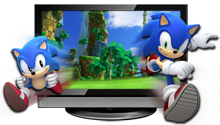
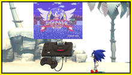
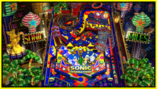

<div id="contents-feature">
	<section>
		<h1>白の特徴</h1>
		<h2>『ソニック ジェネレーションズ 白の時空』だけのオリジナル要素を紹介!</h2>
		<div>
			<div class="bgP">
				<h3></h3>
				<p><a href="feature/image/screen_01.jpg" title="3D立体視対応" rel="feature"></a></p>
				<p>3D立体視に対応!<br>
3D規格の周辺機器を利用して、『ソニック ジェネレーションズ 白の時空』を3Dで楽しもう。<br>
※3D周辺機器をご利用の際は、その取扱説明書を必ずお読み下さい。</p>
			</div>
			<div class="bgP">
		<h3></h3>
				<p><a href="feature/image/screen_02.jpg" title="メガドライブ版「ソニック・ザ・ヘッジホッグ」収録" rel="feature"></a></p>
				<p>ゲーム上である条件を満たすと、シリーズの原点であるメガドライブ版『ソニック・ザ・ヘッジホッグ』が、まるごとプレイできます！</p>
			</div>
			<div class="bgP">
			<h3></h3> 
				<p><a href="feature/image/screen_03.jpg" title="ダウンロードコンテンツ「CASINO NIGHT」" rel="feature"></a></p>
				<p>追加コンテンツの「ピンボール」を購入すると、『ソニック・ザ・ヘッジホッグ２』に登場したカジノナイトゾーンを舞台としたピンボールを遊ぶことができます。</p>
			</div>
		</div>
	</section>
</div>